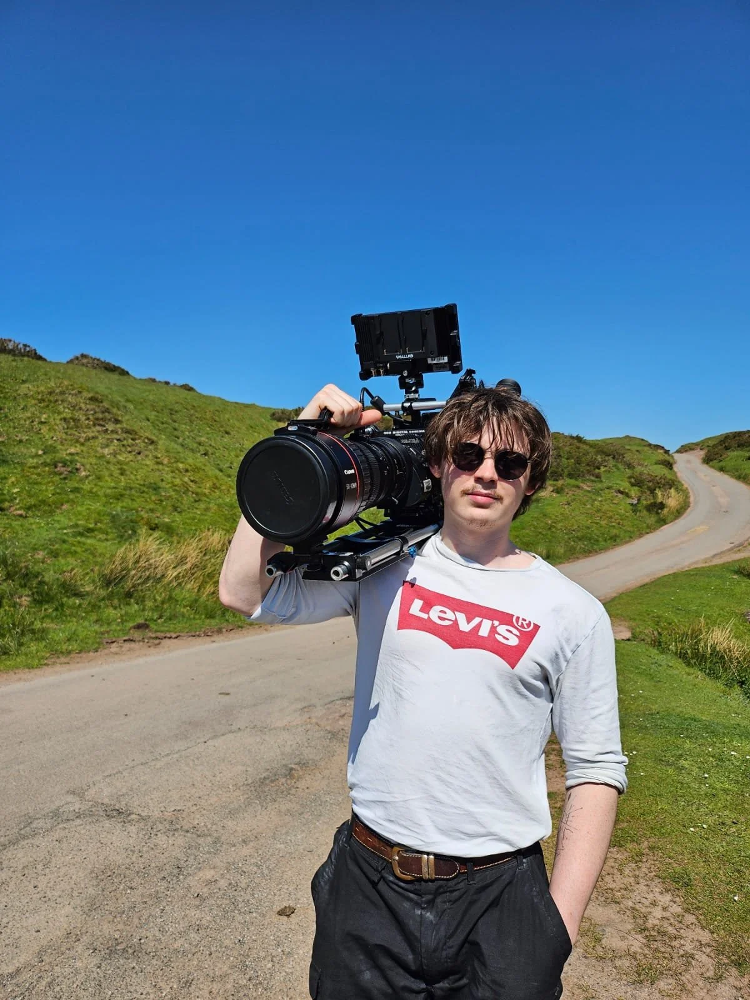
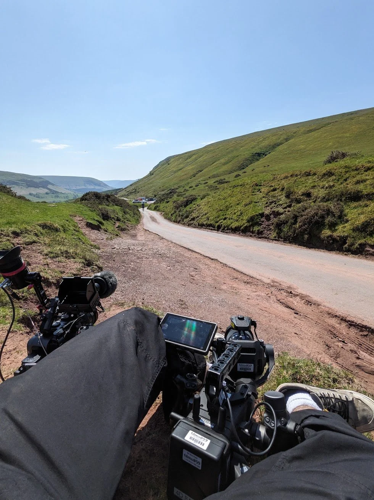
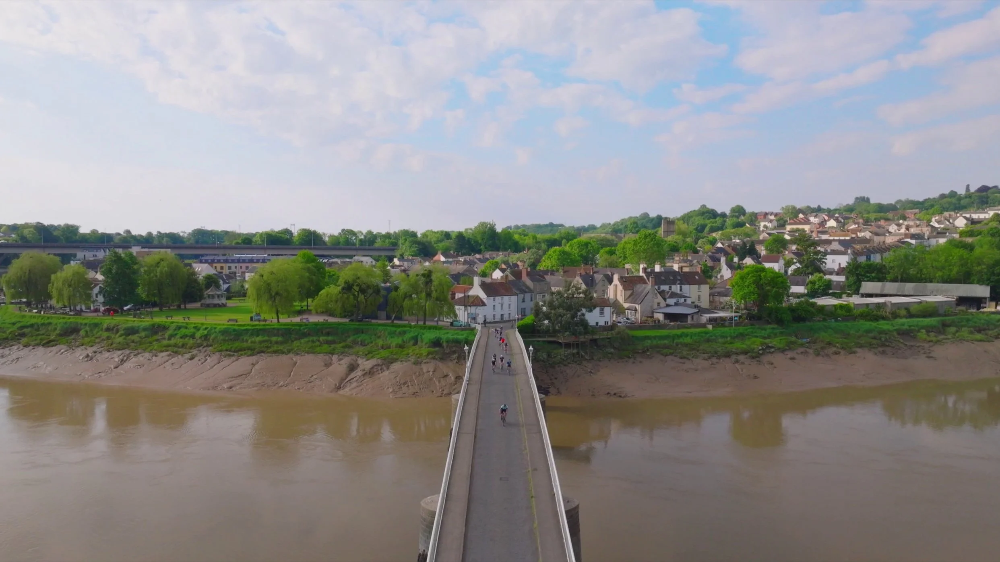
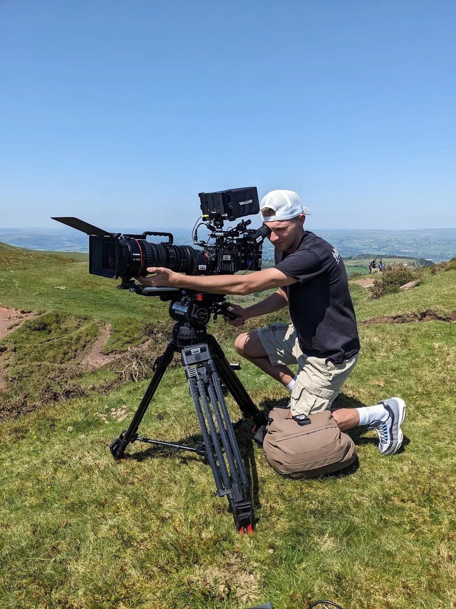

Black Rat
Sportive 2024
Capturing the excitement and endurance of The Black Rat Sportive was an exhilarating challenge. Over the course of one action-packed day, I led a team of three operators as we chased the cyclists through various milestones along the race route. Our goal was to highlight both the intensity of the competition and the breathtaking landscapes the riders traversed.
To achieve a dynamic and cinematic look, we employed a diverse array of camera systems. The Red Raptor, paired with a CN20 long lens setup, provided stunning telephoto shots, showcasing the riders' determination from afar. For more immersive, close-up angles, I used the DJI Ronin 4D in a run-and-gun configuration, capturing fluid, engaging sequences at ground level. Aerial perspectives, courtesy of the Mavic 3 Pro Cine, added sweeping views of the race, highlighting the scale and beauty of the course.



